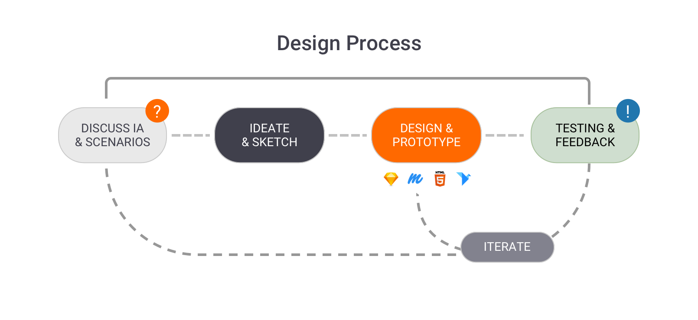

I am a Product (UX/UI) Designer and creative problem-solver, providing solutions that are simple and elegant
With more than 10 years of experience, I currently work at Girnarsoft as a Design Manager. My role as a manager, User Experience (UX/UI) Designer and creative problem-solver. I have led projects cardekho.com and gaadi.com and teams that have worked together to design mobile and web products intended for use by a variety of autoportal stakeholders (Dealers, Individual Seller, Buyers and others). I have also worked to create better service experiences for Dealers, Buyers and seller who are ‘using’ the cardekho.com.
My mission: To help the users to buy and sell a vehicle that are right for them, through online portal with UX design & research.
As a UX Designer (UX) I define core elements of the a product, design language and component library, support various work streams across all the platform.
I work closely with various departments of the company, including branding, marketing, strategy, the templates and product design teams, engineering, as well as product owners, stakeholders, and executive leadership. I ensure that all facets of our company and product offerings are properly communicated to our customers and website visitors.
How I work
I work with mindset and methodologies to understand the users and products. I love to collaboratively sketch, brainstorm, talk to and co-create with users, facilitate conversations, solve difficult problems, manage project details, and work closely with my team. Always ask Why, What and thinking on How?
I use visualization to model ecosystems, communicate research findings, and better understand complex relationships.I’ve seen the best work happen when we re-design – with sellers, buyers, “users,” and each other.
I love design thinking - and work around it.

Skills
-
Leadership
Manage team,Mentoring our team, Resource Planning, Training.
-
Resaerch
Competitive Analysis, Contextual Inquiry, Personas, User Testing, Data Analysis.
-
Project Defination
Business Requirements Gathering, Page Level Requirements, Project Timeline. Define challange and flow
-
Information Architecture
Site Maps, User Flows, Wireframes, Functional Specifications, Interface Design, Prototypes. Testing
Work Experience
-
Design Manager @ Girnarsoft, Gurugram
June 2013 - Present
While working with Girnarsoft, I have worked on www.cardekho.com & www.gaadi.com to make a more powerful and usable System for the Buyer, Seller, Dealer and internal users. I am following the Double Diamond(4D) methodology: Discover, Define, Design and Deliver, Using Research, UT, Analytics, Database, A/B testing. I have closely work with product manager, business leaders, developer & design team. A few highlights have included working on improving user engagement with define Brand guidelines, PWA Components, frameworks, components, and patterns etc. I always guide, support & grow my colleagues
Role: Requirement Gathering • Research • Create guidelines • Brainstorming and Sketching • Interface Design • Lead a team of 6 members • Professional Development -
UI Designer @ Genpact India, Gurugram
June 2013 - Present
In the Genpact as a full-time UI Designer, led design on multiple platforms, e-learning project, Internal backend projects, mobile app, and responsive web projects. Collaborated closely on product planning and execution with our clients NYT, Johnson & Johnson and about.com on Product, and Development teams in NYC, to produce intuitive, delightful user experiences.
-
Web Designer @ Impact Design Solutions, New Delhi
June 2013 - Present
Designed, prototyped and websites for many clients. Collaborated with design and develop- ment team. It was my 1st Job. I learned many of the basic of design principal, need of clients, web language HTML, CSS, Adobe Tools like Flash animation, advance photoshop etc.